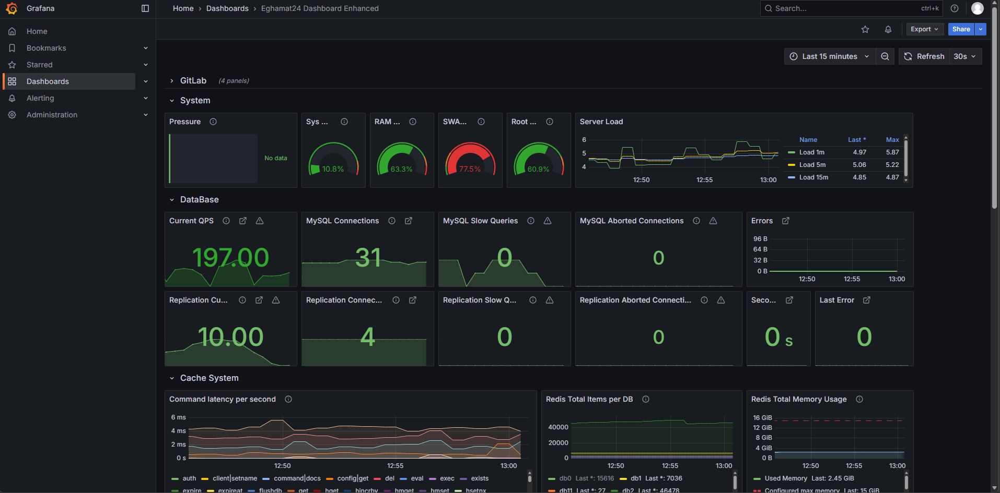

Grafana یک پلتفرم مصورسازی و پایش لحظهای (Real-time Monitoring & Visualization) است که دادههای پراکنده از سرورها، دیتابیسها، کش، شبکه و حتی ابزارهای کسبوکار را در قالب نمودارها، گیجها و اعداد قابلفهم، روی یک صفحه واحد جمع میکند.
تفاوت Grafana با Sentry در چیست؟ Sentry به سؤال «چه باگی در کد رخ داد؟» پاسخ میدهد. Grafana به سؤال «زیرساخت من الان چه حالی دارد؟» پاسخ میدهد — آیا سرور پر شده؟ آیا دیتابیس کند است؟ آیا حافظه دارد تمام میشود؟ آیا ترافیک ناگهان جهش کرده؟ این دو ابزار مکمل یکدیگرند، نه جایگزین.
یک تشبیه ساده: Grafana داشبورد خودرو شماست. سرعتسنج، دماسنج، چراغ هشدار بنزین. وقتی همه چیز سبز است یعنی سفر آرام؛ وقتی چراغ قرمز روشن شد، باید قبل از خرابی اقدام کنید. هدف اصلی Grafana جلوگیری از خرابی است، نه تحلیل خرابی بعد از وقوع.
| قابلیت | ارزش برای کسبوکار |
|---|---|
| Multi-source Dashboards | اتصال همزمان به MySQL، Redis، Prometheus، و دهها منبع دیگر |
| Real-time Refresh | بهروزرسانی خودکار دادهها (در این داشبورد هر ۳۰ ثانیه) |
| Time Range Selector | تغییر بازه از ۱۵ دقیقه تا ۹۰ روز، برای دیدن روند طولانیمدت یا مشکل لحظهای |
| Sharing & Export | اشتراکگذاری داشبورد یا تکپنل با مدیران، یا گرفتن snapshot برای گزارش |
این داشبورد جامع، چهار حوزه اصلی زیرساخت را در یک نگاه پایش میکند: GitLab، System، DataBase و Cache System. هر بخش با Section Header قابل بازشدن/بستن سازماندهی شده تا تیم بتواند روی حوزهای که نیاز دارد تمرکز کند.

اگر گزارش قبلی Sentry را خواندهاید، ممکن است این سؤال پیش بیاید: «خب، با Sentry که خطاها را میبینیم، چرا به Grafana هم نیاز داریم؟»
| معیار | Sentry | Grafana |
|---|---|---|
| سؤال اصلی | چه باگی در کد رخ داد؟ | زیرساخت من چه حالی دارد؟ |
| زمان واکنش | پس از وقوع خطا | قبل از وقوع خطا (پیشگیرانه) |
| حوزه پوشش | کد اپلیکیشن (Backend, Frontend, Mobile) | سرور، دیتابیس، کش، شبکه، DevOps |
| مخاطب اصلی | توسعهدهندگان | DevOps + SRE + مدیر فنی |
| سطح جزئیات | Stack trace و کد دقیق | متریکهای عددی و روندها |
| هدف نهایی | رفع باگ | پیشبینی و پیشگیری |
یک سناریوی واقعی: کاربر شکایت میکند که سایت کند است.
۱. به Grafana نگاه میکنید: میبینید SWAP پر شده و QPS دیتابیس ناگهان دو برابر شده. مشکل در زیرساخت است.
۲. به Sentry نگاه میکنید: میبینید یک N+1 Query در یک Job جدید رخ داده که هزاران کوئری اضافه میسازد.
Grafana گفت کجا و Sentry گفت چرا. ترکیب این دو، مشکلی که میتوانست ساعتها طول بکشد را در دقایق حل میکند.